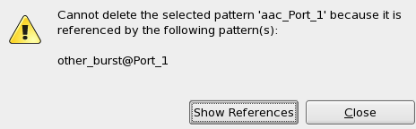
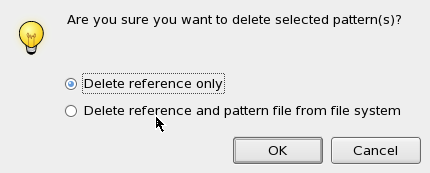

Deleting pattern files
About this task
When deleting a pattern file, which is part of a pattern master file setup, you can choose whether to delete only the reference in the pattern master file, or to delete the reference and the pattern file from the file system.
But even when you select the "Delete reference and pattern file from file system" option, the file is not completely deleted. A backup file named file_name.bak remains at the original location.
Before you begin
You should check for references. You must first delete any references, for example references from a pattern master file, before you can delete the pattern file.
Procedure
Results
Either only the reference, or the reference and the pattern file is removed.
But even when you select the "Delete reference and pattern file from file system" option, the file is not completely deleted. A backup file named file_name.bak remains at the original location.
Example
"Cannot delete ..." error message:

Confirmation dialog:

Functional changes
- Introduced in SmarTest 7.1.3